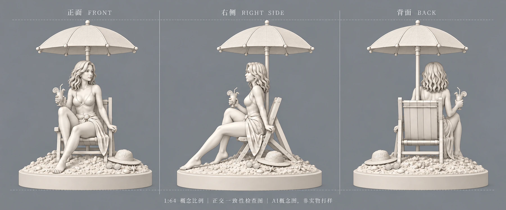
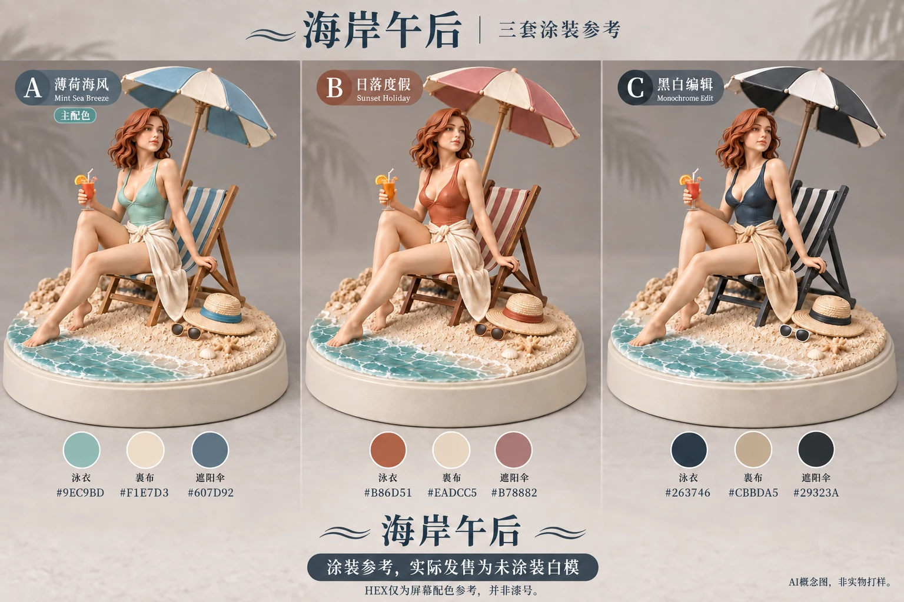
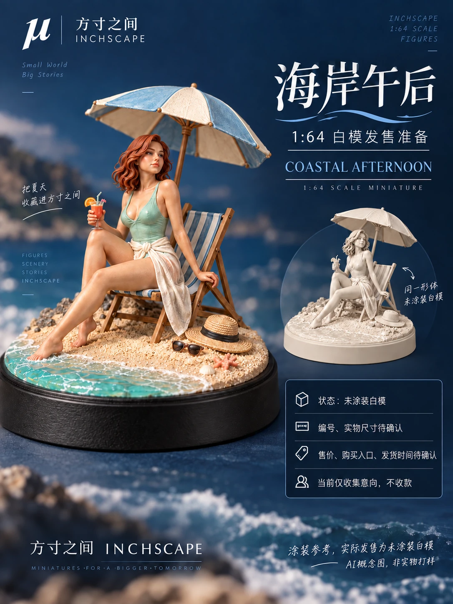

有来源的分析
区分公开样本、推测与实际业务数据，不把海外商品观察直接当成国内需求验证。
研发资源与部署 Agent
用 Skill 固化研发链路，让 Agent 承担分析、整理与产出。
从概念与多视图，到建模交接、修模、打样和发售准备。
将业务背景、参考来源、1:64 工艺约束和交付清单写入可复用 Skill。Agent 分析需求、组织方案和版本资料；每一阶段都留下可以审核、可以交接的结果，而不把“生成了图片”当作“完成了产品”。
案例文件标注日期为 2026.09.21。“海岸午后”已形成概念与发售准备资料，尚未完成实体打样、量产或实际发售。以下展示真实文件中的阶段产出。
完整流程覆盖 AI 分析 → 三／多视图 → 混元建模 → 修模师修模 → 打样 → 发售。不同项目可沿用这条链路；本案例只将有文件证据的阶段标为已形成。
整理公开样本、目标场景与制作约束，提出概念方向。Shirley 选择方向并锁定设计。
输出造型参照与配色候选，检查人物比例、姿态、配饰及可制作性。
以确认视图进入建模，保留任务编号、模型文件和版本；本样本未展示已验证模型交付。
修模师处理比例、薄弱连接、拆件与打印问题；Agent 整理问题单和返修版本。
由实物验证结构、打印和涂装效果；通过样品审核后才能推进生产。
汇总海报、标签、定价测算与发布准备；价格、数量、交期与正式发布由人确认。
选择四张代表性图片，展示造型、三视图、配色与商业物料的连续性。保留原图，不用重绘内容替代项目成果。



区分公开样本、推测与实际业务数据，不把海外商品观察直接当成国内需求验证。
将概念、视图、配色、物料与测算归档，明确当前版本、缺失信息与下一位协作者需要什么。
没有模型文件不等于建模完成，没有实体照片不等于打样完成，没有正式发布不等于已经发售。